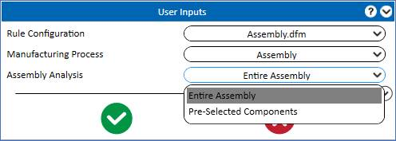
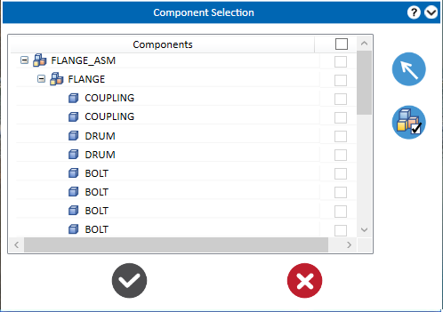
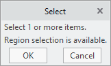
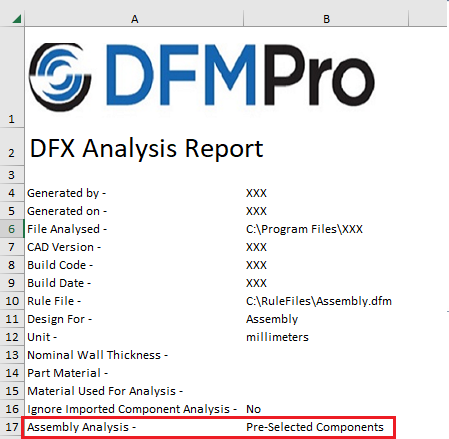

アセンブリの場合、DFMProでは アセンブリ全体 または 事前選択コンポーネント に対して解析を実行できます。
DFMPro 設定 で アセンブリ事前選択オプション が選択されている場合のみ、ドロップダウンリストに「事前選択コンポーネント」オプションが表示されます。それ以外の場合は、「アセンブリ全体」オプションのみが使用可能です。
アセンブリ解析として アセンブリ全体 または 事前選択コンポーネント を選択し、 解析 ボタンをクリックして解析を実行します。
解析 ボタンをクリックして解析を実行します。
DFMPro は、ルールファイル内で選択された Assembly "組立て"、Tubing "チューブ配管"、Cabling "ケーブリング"、Welding "溶接" モジュール向けのアセンブリ固有ルールを解析し、統合された結果を表示します。

アセンブリ全体: ドロップダウンリストからこの機能を選択すると、アセンブリ全体に対して解析を実行します。
事前選択コンポーネント: ドロップダウンリストからこの機能を選択すると、選択したコンポーネント／サブアセンブリに対して解析を実行します。解析 ボタンをクリックすると、必要なコンポーネント／サブアセンブリを選択するためのコンポーネント選択グループボックスが表示されます。
注記:
一般ルールは、事前選択されたコンポーネントに依存せず、アセンブリ内のすべてのコンポーネントに適用されます。
解析を実行するために、コンポーネント選択グループボックスから単一または複数のコンポーネント／サブアセンブリを選択します。
DFMPro はモデルツリーに基づいてコンポーネントの一覧を生成します。コンポーネント選択グループボックスに表示されるリストから必要なコンポーネントを選択します。選択されたコンポーネントはグラフィック領域でハイライト表示されます。
解析 ボタンをクリックして、選択したコンポーネント／サブアセンブリの解析を実行します。

グラフィックまたはモデルツリーからコンポーネントを選択 ボタンをクリックして、グラフィック領域およびモデルツリーの選択モードを有効にします。
要件に応じて、グラフィック領域から 単一 または 複数のコンポーネント を選択します。DFMPro では、グラフィック領域でのウィンドウ選択による複数コンポーネントの選択も可能です。
または
モデルツリーから必要なコンポーネントを選択します。
必要なコンポーネントを選択した後、選択ダイアログボックス内の OK ボタンをクリックするか、マウスの中ボタンをクリックして選択モードを終了し、選択を確定します。その後、 解析 ボタンをクリックして、選択したコンポーネント／サブアセンブリの解析を実行します。

選択されたすべてのコンポーネントを表示: 選択されたすべてのコンポーネントを表示 ボタンを選択すると、選択されたすべてのコンポーネントがグラフィック領域でハイライト表示され、確認できます。
コストタブのコンポーネントコストビューグループボックスでは、解析が実行された選択コンポーネントのみについて、数量および単価が表示されます。
DFMPro では、同一セッション内において、必要なコンポーネントを再度選択する手順を繰り返すことなく、保存されたアセンブリに対して解析を再実行できます。
DFMPro の解析レポートには、アセンブリ解析で選択されたオプションが表示されます。
